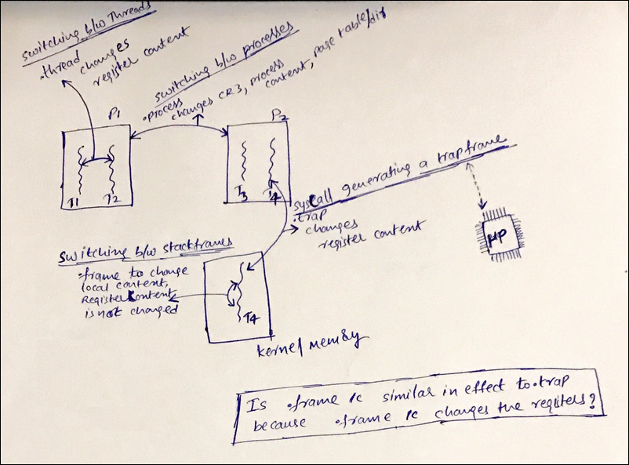

Trap Frame is stack frame generated by the OS with the help from the processor.
When you are executing your code. For example, if your code invokes a syscall,
this will cause the processor to invoke the predefined trap handler of the OS
and the OS will capture the current registers at the time of syscall as a
TrapFrame and then calls the necessary System call handler function. This
TrapFrame gets also generated not only during syscalls but also during
exception/interrupts(timer) etc. Basically, TrapFrame is meant to temporarily save
the current execution context of the thread and then continue with other work so
that once the work is done the processor can resume back(how?). This makes lot
of sense if we question our self on "how does the OS gets a chance to run and
do its job like scheduling in a uniprocessor system where only a single (user)
program can run at any given point in time?". Whenever, a thread is executing,
let's say some user code, The APIC (timer) generates timer interrupt because of
which the processor which is executing the user code gets interrupted, as part
of it, the processor traps the current execution and gives the OS kernel the
control to respond, during this time the kernel checks for the thread quantum to
decrease. If the quantum for the thread has completely lapsed then, the kernel will
run the scheduling(the act of selecting new thread) and fires up the dispatching
(the act of running new thread. This is called Context Switching). If the
quantum for the thread is not lapsed then the thread continues to execute. Now
it makes sense how the OS kernel gets to run for its chance and the important
point is the kernel does this in the context of the currently running thread.
Mode transition or trap handling and Context Switching are not one and the same
they are completely different. Trap handling happens on the current thread
whereas context switching is selecting a different thread for execution.
